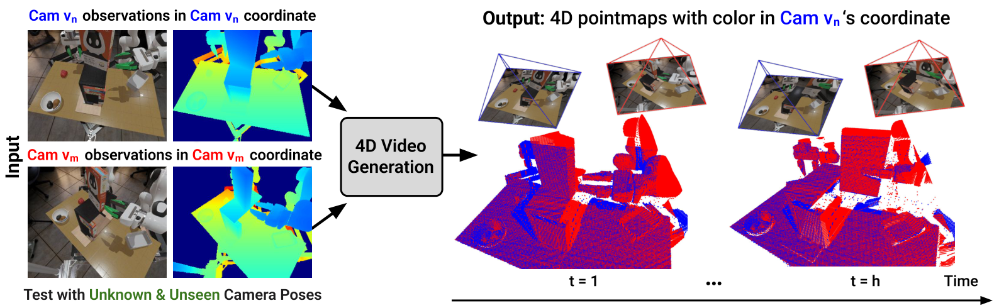
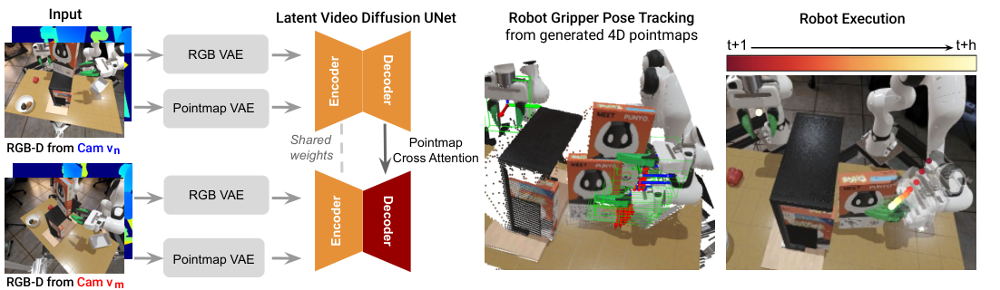
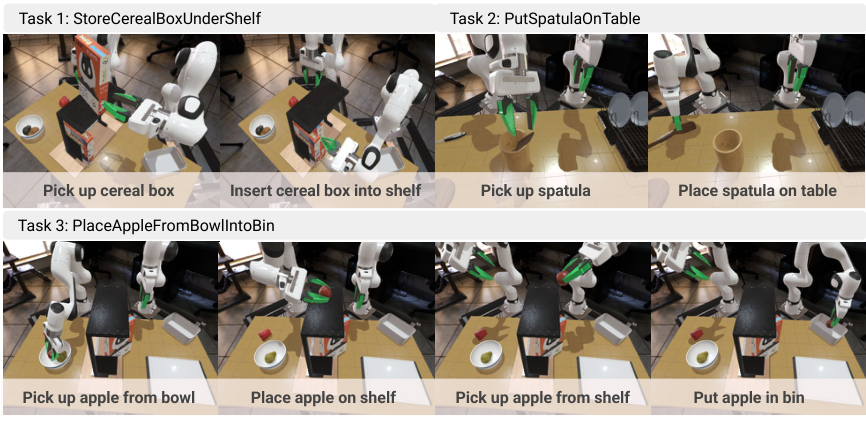
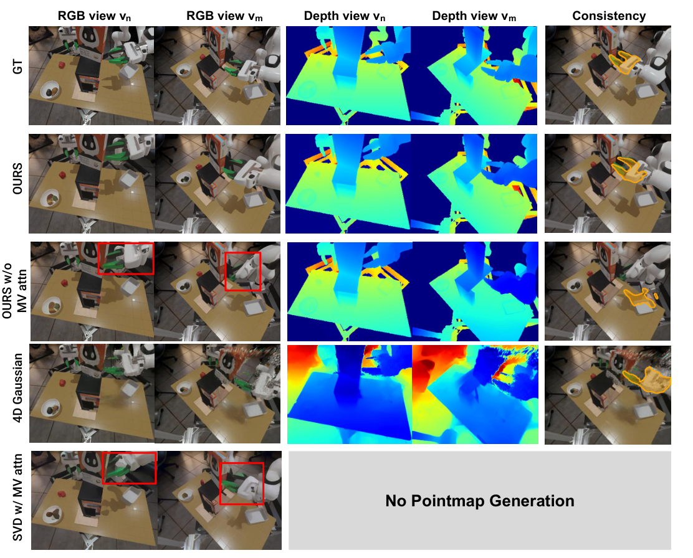
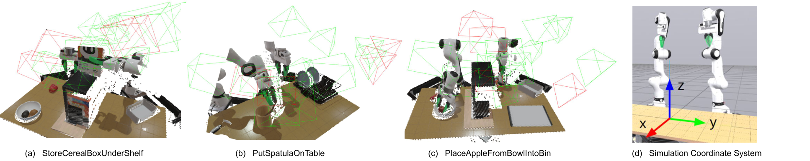

Geometry-Aware 4D Video Generation for Robot Manipulation
这篇论文提出一个面向机器人操作的 4D 视频生成模型：给定两路 RGB-D 初始观测，生成未来多视角 RGB-D / pointmap 序列，并通过跨视角 pointmap 对齐，让视频在时间上连续、在几何上跨视角一致。
1. 论文速览
| 论文要解决什么 | 解决机器人操作中视频生成的“两难”：RGB 视频生成模型通常时间连续但缺少 3D 几何一致性；3D-aware 生成方法能约束几何但往往局限于简单物体或静态背景。作者希望生成既时间平滑、又跨相机视角几何一致的未来 RGB-D 视频，并从中提取机器人末端轨迹。 |
|---|---|
| 作者的方法抓手 | 在 Stable Video Diffusion backbone 上增加 pointmap 生成分支，用 DUSt3R 风格的 cross-view pointmap alignment 做几何监督；再在 U-Net decoder 中加入 multi-view cross-attention，让参考视角和第二视角共享几何信息。生成的 4D RGB-D 视频用 FoundationPose 追踪 gripper 6DoF pose，转成机器人动作。 |
| 最重要的结果 | 在多视角 4D 视频生成上，本文方法在仿真和真实数据集上整体取得更高 cross-view consistency、更好 RGB FVD 和更低 depth error；在三项仿真机器人操作中，平均成功率达到 0.64，显著高于 Dreamitate 0.12、Diffusion Policy 0.12 和 DP3 0.25。 |
| 阅读时要注意的点 | 这篇不是直接训练一个端到端 policy，而是把 4D 视频生成当作可用于 pose extraction 的世界模型。关键要看清：几何一致性来自 pointmap 对齐和跨视角 attention；动作来自生成 RGB-D 视频上的 6DoF pose tracking，而不是模型直接输出 action。 |

2. 问题设定与动机
机器人在操作时需要预测环境如何随交互而变化，尤其要处理遮挡、长时物体运动和相机视角变化。视频生成模型看起来像天然的“视觉世界模型”，但如果视频跨视角不一致，后续从视频里追踪机器人末端或物体位姿就会非常不稳定。
作者指出现有方法的核心矛盾是 temporal coherence 与 3D consistency 往往不能兼得。纯 RGB 视频模型可能出现 flickering、变形、物体消失等问题；4D / 3D-aware 方法则常局限于简单单物体场景。机器人操作场景更难，因为它有多物体、机械臂遮挡、精确抓取和跨相机泛化。
3. 相关工作定位
3.1 Video Generation
传统视频生成从 RNN、GAN 发展到 diffusion 和 latent diffusion。Stable Video Diffusion 等模型具备较强短时视觉预测能力，但主要优化 RGB 序列，缺少明确的 3D 空间约束。本文继承 SVD 的时间建模能力，同时新增 RGB-D / pointmap 的几何监督。
3.2 Multi-view and 4D Video Generation
已有 camera-conditioned video generation 通过相机姿态提高空间一致性；也有 4D generation 工作把视频模型和 novel-view synthesis 分开优化。本文的定位是把 temporal consistency 和 spatial consistency 放到同一个视频扩散框架中，通过跨视角 pointmap 对齐直接训练多视角 4D 预测。
3.3 Generative Models for Robot Planning
生成模型可被用作 dynamics model、inverse dynamics 的输入、policy condition 或 action-video joint model。本文没有训练 inverse dynamics，也没有直接生成 action，而是让 4D 视频产生可追踪的 RGB-D 轨迹，再用现成 6DoF pose tracker 提取末端执行器轨迹。
4. 方法精读
4.1 总体结构
输入是来自两个相机视角的 RGB-D 历史观测，输出是未来 RGB 视频和未来 pointmap 序列。Pointmap 是每个像素对应的 3D 坐标图，因此它比普通 depth map 更直接地携带几何结构。模型在参考视角 $v_n$ 中生成本视角 pointmap，同时把另一个视角 $v_m$ 的 pointmap 预测到 $v_n$ 的坐标系里。

4.2 RGB 视频扩散 backbone
模型采用 Stable Video Diffusion。历史帧先由 pretrained VAE encoder 投到 latent space，U-Net diffusion model 预测未来 latent，再由 VAE decoder 解码为未来 RGB 帧。训练时使用类似 DDPM 的目标，直接预测 clean latent：
这部分提供 temporal prior：模型可以利用大规模视频预训练带来的运动平滑性和视觉先验。
4.3 Geometry-consistent pointmap supervision
核心创新在 3D pointmap 监督。给定视角 $v_n$ 的历史 pointmaps，Pointmap VAE 将其编码到 latent space，再用 diffusion 预测未来 pointmaps。与此同时，模型也从第二视角 $v_m$ 预测未来 pointmaps，但这些点不是在 $v_m$ 自己坐标系中表达，而是投影到参考视角 $v_n$ 的坐标系中，记作 $X^{m \rightarrow n}_{t+1:t+h}$。
训练时对本视角 pointmap latent 和投影视角 pointmap latent 同时施加 diffusion loss。相机位姿在训练时用于定义这个投影关系；推理时模型只根据每个视角的初始 RGB-D 观测，就能在参考坐标系里生成未来 pointmaps，不需要把 camera pose 作为输入。
4.4 Multi-view cross-attention
RGB 视频可以让各视角各自在自己的坐标系中生成；但 pointmap 预测必须显式对齐跨视角几何。为此，作者使用两个独立 U-Net decoder 分支，并在 view $v_m$ 分支的每个 decoder block 后加入 cross-attention，让 $v_m$ 的中间 feature attend 到参考视角 $v_n$ 的对应 feature。
Appendix 说明，总共新增 12 个 cross-attention layers。Query 来自 $v_m$ 分支 decoder block 的 feature map tokens，key/value 来自 $v_n$ 分支对应 block 的 feature map tokens。这一步是 Table 1 中 “OURS w/o MV attn” 明显变差的直接原因。
4.5 Joint temporal and 3D consistency objective
完整 loss 是所有未来时间步、两个视角上的 RGB diffusion loss 加 pointmap 3D consistency loss：
实验中 $\lambda = 1$。Appendix 还加入 gripper-region reweighting：用 gripper mask 下采样 8 倍到 latent resolution，对 gripper 区域 loss 加权，使模型更关注后续 pose tracking 最关键的区域。
4.6 从 4D 视频恢复机器人动作
生成未来 RGB-D 后，作者用 FoundationPose 做 6DoF pose tracking。输入包括单视角 RGB-D、初始帧目标物体 mask、相机内参和 gripper CAD model。两个视角分别估计 gripper pose，选择 confidence score 更高的结果，再用参考视角 extrinsics 转到 global frame，作为机器人执行轨迹。
Gripper open/close 不是由模型直接输出，而是从生成 RGB-D 中分割左右 gripper fingers，投影成 3D 点云并计算两个 finger centroid 的距离。阈值按任务设定：StoreCerealBoxUnderShelf 为 0.10 m，PutSpatulaOnTable 为 0.06 m，PutAppleFromBowlIntoBin 为 0.12 m。
5. 实验与结果
5.1 数据集与任务
仿真使用 Toyota Research Institute 的 LBM simulation，基于 Drake。三项桌面操作任务为 StoreCerealBoxUnderShelf、PutSpatulaOnTable 和 PlaceAppleFromBowlIntoBin。每个任务 25 条 demonstrations，每条 demo 有 16 个相机位姿的 RGB-D 观测，因此每任务共 400 个视频；12 个视角训练，4 个视角测试，对应 300 个训练相机视角和 100 个测试相机视角。
真实数据集包含两个 Franka Panda 双臂收集的 4 个任务：AddOrangeSlicesToBowl、PutCupOnSaucer、TwistCapOffBottle、PutSpatulaOnTable。每个任务 20 条 teleoperation demonstrations，用两台 FRAMOS D415e 相机同步采集 RGB-D 序列。

5.2 4D 视频生成指标
| 评估维度 | 指标 | 含义 |
|---|---|---|
| RGB video quality | FVD-n, FVD-m | 分别衡量参考视角和第二视角生成视频与真实视频的 Fréchet Video Distance，越低越好。 |
| Depth quality | AbsRel-n/m, δ1-n/m | 从 predicted pointmaps 取 z 值作为 depth，与真实 depth 比较；AbsRel 越低越好，δ1 越高越好。 |
| Cross-view 3D consistency | mIoU | 用 SAM2 跟踪 gripper mask，将参考视角 mask lift 到 3D 后重投影到另一视角，与原 gripper mask box 计算 IoU，越高表示跨视角对齐越强。 |
Baselines 包括 OURS w/o MV attn、4D Gaussian、SVD、SVD w/ MV attn。所有模型在同一多视角 RGB-D 视频数据集上训练，并在 novel viewpoints 上测试。
5.3 4D 视频生成主结果
Table 1 显示，本文方法在三项仿真任务和真实多任务数据集上总体获得最高 cross-view consistency，并在 RGB FVD、depth AbsRel / δ1 上整体优于 baselines。几个代表性数值如下：
| Setting | OURS mIoU | OURS w/o MV attn mIoU | 4D Gaussian mIoU | 简要解读 |
|---|---|---|---|---|
| StoreCerealBoxUnderShelf | 0.70 | 0.41 | 0.39 | 跨视角 attention 对遮挡严重任务很关键。 |
| PutSpatulaOnTable | 0.69 | 0.44 | 0.46 | OURS 同时保持较低 FVD 和高 depth accuracy。 |
| PlaceAppleFromBowlIntoBin | 0.64 | 0.26 | 0.44 | 长时双臂任务中去掉 MV attention 后一致性明显崩塌。 |
| Real-world multi-task | 0.56 | 0.32 | 0.00 | 真实场景中 4D Gaussian 的跨视角一致性几乎失效。 |

5.4 机器人策略结果
机器人策略评估在三项仿真任务上进行。每个任务测试 30 次 rollouts，初始物体 pose 未见过，相机视角也来自测试集 novel viewpoints。生成模型输入两个 novel camera views 的 RGB-D，生成 10 个未来帧，FoundationPose 提取双臂 gripper 6DoF 轨迹。执行是分段 open-loop：执行一段后，用更新后的 RGB-D 重新推理。
| Method | Task 1 | Task 2 | Task 3 | Avg |
|---|---|---|---|---|
| Dreamitate | 0.10 | 0.17 | 0.10 | 0.12 |
| Diffusion Policy | 0.10 | 0.27 | 0.00 | 0.12 |
| DP3 | 0.23 | 0.27 | 0.00 | 0.25 |
| OURS | 0.73 | 0.67 | 0.53 | 0.64 |
Dreamitate 不预测 depth，且缺少几何一致性监督，导致提取的 pose 质量差。Diffusion Policy 即使用多视角训练，也难以泛化到 novel viewpoints，因为它没有显式建模跨视角几何对应。DP3 使用 RGB-D 点云输入后 Task 1 略好，但对小物体抓取帮助有限。本文方法通过生成 RGB-D 并显式追踪 gripper pose，动作精度更高。
5.5 资源与效率
| Method | Inference Time | Training Memory | Trainable Parameters |
|---|---|---|---|
| OURS | 30.0 s | 47 G | 2.4 B |
| OURS w/o MV attn | 29.3 s | 46.5 G | 2.38 B |
| 4D Gaussian | 2 s | 2813 M | 856,774 |
| SVD (Dreamitate) | 13.4 s | 45.8 G | 1.54 B |
| SVD w/ MV attn | 15.1 s | 46.3 G | 2.4 B |
OURS 明显更慢，但换来了 RGB-D 质量和几何一致性。作者也承认 30 秒生成 10 帧对于闭环 reactive policy 仍偏慢。
6. 复现与实现细节
模型输入
实际使用最新观测并重复 $h=10$ 次以匹配要预测的未来帧数。RGB VAE 和 pointmap VAE 都产生 $h \times c \times w' \times h'$ latent，其中 $h=10$、$c=4$、$w'=32$、$h'=40$。
U-Net 输入
RGB / pointmap condition latent 与未来 noisy latent 沿 channel 拼接，形成 $h \times 16 \times 32 \times 40$ 输入张量。
Cross-attention
在 $v_m$ 分支的每个 decoder block 后加入 cross-attention，总共 12 层；query 来自 $v_m$，key/value 来自参考视角 $v_n$。
Gripper reweighting
用 simulation segmentation 或真实场景 SAM2 得到 gripper mask，下采样 8 倍到 latent 分辨率，对 gripper 区域 loss 加权，以提高 pose tracking 所需区域质量。
训练
每个任务单独训练约 60 epochs，使用 4 张 NVIDIA RTX A6000 48GB。全 U-Net fine-tune，learning rate 为 $1 \times 10^{-5}$，AdamW，batch size 4；image 和 pointmap VAE encoders 冻结。
推理
使用 EulerEDMSampler，25 denoising steps。机器人部署中生成模型和 pose tracker 跑在单张 NVIDIA GeForce RTX 4090 上；10 个未来帧约 30 秒。
相机采样
Appendix 中相机采样使用半球壳：内半径 $r_1=0.7$m，外半径 $r_2=1.2$m，中心为桌面世界坐标原点；限制范围为 $0.2 \le x \le 0.6$m、$-0.5 \le y \le 0.5$m、$0.7 \le z \le 1.2$m。每个 episode 随机采样 16 个 camera poses，训练和测试视角分开。

tmp/pdf_text_2507.01099.txt，图片来自 Report/2507.01099/figures/。
7. 分析、局限与边界
7.1 这篇论文最有价值的地方
最有价值的地方是把“机器人可用的视频生成”从 RGB 外观推进到 RGB-D / pointmap 的几何一致性。很多视频世界模型只要看起来连贯就算成功，但机器人需要从视频中提取可执行轨迹；本文明确把跨视角 3D 对齐作为训练目标，并证明这能提升 FoundationPose 提取末端轨迹后的任务成功率。
第二个价值是它给出了一个很清楚的 robot pipeline：4D 生成不是终点，后面接 pose tracking、gripper state inference 和分段 open-loop execution。这样论文能回答“生成视频到底怎样变成动作”的问题，而不是只展示漂亮未来帧。
7.2 结果为什么站得住
结果站得住，首先因为评估拆成了生成质量和下游机器人成功率两层。Table 1 用 FVD、AbsRel、δ1、mIoU 同时评估 RGB、depth 和跨视角一致性；Table 2 再验证这些改进能否转化为机器人任务成功率。其次，ablations 直接击中关键设计：去掉 multi-view cross-attention 后 mIoU 和 depth 指标明显下降，说明提升不是简单来自参数量增加。
机器人结果也有说服力：baselines 包括视频生成路线 Dreamitate、RGB 行为克隆路线 Diffusion Policy，以及 RGB-D 点云路线 DP3，且都在 novel camera viewpoints 上测试。OURS 平均 0.64 对比 0.12/0.12/0.25，差距足够大，和“显式建模几何对应能改善视角泛化”的论点一致。
7.3 局限
- 数据要求高：训练需要带多相机视角的 RGB-D 视频数据。仿真中容易生成，真实世界采集会受硬件、标定和深度质量限制。
- 真实深度质量是瓶颈：RGB-D 相机在反光、透明、遮挡、小物体场景下会有噪声，直接影响 pointmap 监督和 pose tracking。
- 推理速度慢：当前 10 帧生成约 30 秒，比端到端 BC policy 慢很多，不适合高频闭环控制。
- 仍依赖外部 pose tracker：动作质量不仅取决于生成视频，还取决于 FoundationPose 对 gripper CAD 的追踪能力和 mask 质量。
- 主要机器人策略实验在仿真中：真实数据展示了 4D 生成质量，但下游机器人成功率主要在模拟任务中报告，真实闭环部署仍需进一步验证。
7.4 边界条件
这套方法适合多视角 RGB-D 数据可获得、目标几何可由 pointmap 表示、末端执行器可被 6DoF tracker 稳定追踪的任务。它不适合需要高频触觉反馈、强接触动力学、动态相机快速移动或没有可靠深度/相机标定的真实场景。
8. 组会问答准备
Q1：为什么不直接用 SVD 生成 RGB 视频再做 pose tracking？
SVD 只生成 RGB，缺少 depth 和跨视角几何一致性。机器人末端 pose tracking 需要稳定 RGB-D 和可对齐的几何结构。实验中 Dreamitate/SVD 路线平均成功率只有 0.12，说明仅有 RGB 视频不足以支撑 novel-view manipulation。
Q2：为什么 pointmap 比 depth map 更适合这里？
Depth 只给每个像素沿相机射线的距离；pointmap 给每个像素的 3D 坐标。跨视角对齐时，pointmap 能直接表达“另一个视角中的点投影到参考坐标系后在哪里”，更适合做 cross-view 3D supervision。
Q3：训练时需要相机位姿，推理时为什么不需要？
训练时相机位姿用于构造监督信号，即把 $v_m$ 的 pointmap 投到 $v_n$ 坐标系。推理时模型已经学会从 RGB-D observation 到参考坐标系 pointmap 的映射，因此不把 camera pose 作为输入也能预测对齐的未来 pointmaps。
Q4：机器人动作是怎么从生成视频来的？
生成 RGB-D 视频后，用 FoundationPose 对 gripper CAD model 做 6DoF pose tracking。两个视角独立追踪，取 confidence 高的结果，再转到 global frame。Gripper 开合由左右 finger 的 3D centroid 距离阈值判断。
Q5：这篇和 Dream2Flow / NovaFlow 的关系是什么？
Dream2Flow / NovaFlow 主要把生成视频蒸馏成 object flow，用物体运动作为控制接口；这篇更关注生成视频本身的多视角 RGB-D 几何一致性，并从生成视频中追踪 robot gripper pose。三者都在解决“视频生成怎样变成机器人动作”，但接口层不同：object flow vs. gripper 6DoF pose trajectory。